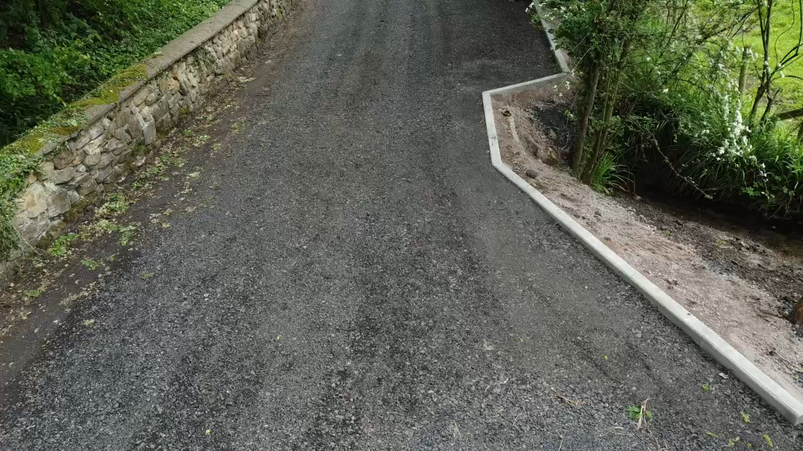

Stage-0 screening note
Ironbridge Project Snapshot / Initial View
Marnwood Hall / Buildwas Road is a Stage-0 screening view for deciding whether this site should move into the next development proof stage.
Recommendation: Conditional Proceed. Treat this as a frontage-led local charging opportunity, not a proven high-turnover hub.
Core evidence: the 5km local basket has 9 monitored sites, 3.9% average occupancy, and a peak of 6 EVSE charging at once.
Wider monitored universe: 23 entries / 22 power-resolved sites, including 7 sites at or above 50kW.
Short monitoring window, suitable for screening only.
Close-in public charging exists, but usage is still relatively cool.
Regional demand proxy only, not Marnwood forecast throughput.
Higher-power benchmark layer for comparison.
The area already shows real public charging activity, led by a small set of mature nodes.
Stage-1 must prove Marnwood's capture, frontage layout, grid route, and site authority.
01 Site introduction
Project / Site Introduction
Marnwood Hall sits on the Buildwas Road frontage, so the project should first be read through site context and charging role, before traffic, competition, and observed use.
Site context
Marnwood Hall is located on Buildwas Road in Ironbridge, sitting at the frontage of the local Ironbridge / Broseley / Madeley movement catchment. The plot faces the main road and has good frontage visibility, making it more suitable as a local demand capture point than as a hidden destination-only site.
Charging-site role
The proposed charging scheme would sit on the front side of the site, directly alongside the Buildwas Road frontage. This is not a typical meal-stop use case; it is better framed as a frontage-led local charging point whose job is to capture existing public charging demand in the area and prove whether it can function as a local top-up node.
The site reads more like a town-edge / local-through-traffic / frontage-capture location than a back-of-site or enclosed-campus location.
The task now is to validate real local demand, the competitive set, and the site’s ability to absorb that demand, not to conclude on investment returns.
This project is not about copying one existing rapid site; it is about testing whether the location can absorb charging demand that is already visible around Ironbridge.
Frontage / access visual

At this stage the most defensible framing is a town-edge / local-through-traffic / frontage-capture site, rather than a closed destination site or a mature meal-stop node.
02 Traffic
Traffic / Roadflow Base
Local road counts show that the frontage around Marnwood Hall does sit beside real and meaningful traffic flow. Here AADT means Annual Average Daily Traffic, measured in vehicles per day.
Nearby traffic count points

Main road traffic levels

The nearest main road to the site, with near-field counts of about 7.3k-9.5k vehicles per day.
The outer corridor trunk road, with peak counts of about 28.8k vehicles per day.
Overall traffic support looks moderate to moderately strong, which is enough to justify continued testing of a local frontage charging point.
03 Competition
Main Competitor Deployment
The key question is which mature nodes absorb demand, and what power / context they operate in.
3.7 km · 100 kW · 13.7% avg occupancy
3.4 km · 125 kW · 11.5% avg occupancy
5.6 km · 175 kW · 8.0% avg occupancy
Competitor map

Scale and occupancy

| High-power benchmark site | Distance to Marnwood | Max power | EVSE | Avg occupancy | Peak charging |
|---|---|---|---|---|---|
| Station Yard | 1.4 km | 50 kW | 12 | 1.1% | 2 |
| Telford Madeley KFC 13 Parkway | 3.4 km | 125 kW | 2 | 11.5% | 2 |
| The Telford Hotel Spa and Golf Resort | 3.7 km | 100 kW | 3 | 13.7% | 2 |
| Britannia Inn | 3.9 km | 50 kW | 5 | 2.4% | 1 |
| George Street Car Park | 4.2 km | 50 kW | 8 | 0.0% | 0 |
| Lord Hill | 4.3 km | 50 kW | 4 | 0.0% | 0 |
| Shell Stirchley Services | 5.6 km | 175 kW | 4 | 8.0% | 2 |
The map and close-in usage pages use the 9-site local core basket nearest to Marnwood. The wider Tencent-cloud monitor line has 23 visible entries / 22 power-resolved sites. The direct fast-charge benchmark is the 7-site layer at or above 50kW. Shell Stirchley sits just outside a strict Marnwood-only 5km circle, but remains useful as a fast-charge benchmark.
04 Observed usage
Observed Charging Pattern
This is the key close-in evidence page. Over the last 75.5 hours, average occupancy across the 9-site local core basket was about 3.9%, with a peak of 6 EVSE charging at the same time. Activity is led by Telford Madeley KFC 13 Parkway, Station Yard, Wharfage Car Park.
Station-by-hour heatmap

Top active stations
125.0 kWPower
11.9%Avg occupancy
358kWh/day proxy
Rapid + high power drives daily kWh.
50.0 kWPower
1.2%Avg occupancy
62kWh/day proxy
Local hub with steadier use.
7.2 kWPower
9.9%Avg occupancy
51kWh/day proxy
Slow charger: longer dwell, lower kWh.
Proxy formula
kWh/day proxy = observed charging hours x charger power x 50% delivery factor / 3.1 days. KFC is high mainly because it is 125kW; Wharfage is visible but remains lower because it is 7.2kW.
05 Demand proxy
Expected Charging Volume
Observed charging hours are converted into a delivered-kWh proxy. The nearest 9-site local core basket reads at 353 - 655 kWh/day. The wider 23-entry monitored universe reads at 1313 - 2439 kWh/day, with the 1070 - 1988 kWh/day fast-charge benchmark coming from the 7 sites at or above 50kW.
Daily kWh proxy by station

Capture scenarios against the ≥50kW benchmark layer
| Scenario | Capture | kWh/day | kWh/year |
|---|---|---|---|
| Low | 5% | 54 - 99 | 19535 - 36279 |
| Base | 10% | 107 - 199 | 39070 - 72558 |
| High | 15% | 161 - 298 | 58604 - 108838 |
This is a screening-level demand proxy, not a revenue forecast and not meter-grade delivered kWh. The local 9-site range comes from aggregate charging hours × power across the 9-site local core basket × 35%-65%, then ÷ 3.1 days = 353-655 kWh/day. The wider monitored universe reads at 1313-2439 kWh/day, and the 7 sites at or above 50kW explain about 82% of that power-weighted proxy. The 35% / 50% / 65% factors are only Stage-0 conversion assumptions.
06 Risk and next step
Risk, Evidence Gaps, and Next Step
The most defensible wording today is not “worth investing”, but “worth validating further”. This page closes out the key Stage-0 unknowns into a clear risk and next-step gate.
| Risk | What we know now | Why it matters | Next-step proof |
|---|---|---|---|
| Capture risk | Observed activity is concentrated in a small number of mature high-power nodes, while Marnwood Hall has no direct usage proof yet. | A new site may not replicate the turnover seen at mature nodes. | Add site-visit read-through, host fit, and pricing / dwell-time assumptions. |
| Grid and layout | Current evidence only covers frontage and use-case fit; there is no formal grid quote or charger layout yet. | Connection cost, ingress / egress flow, and bay positioning could still change the case materially. | Start Stage-1 with a desktop grid check and a preliminary layout. |
| Window depth | The current window is about 3.1 days, which is suitable for screening but not for seasonal conclusions. | A short window may understate or overstate weekday / weekend structure. | Keep refreshing the monitoring window and add a weekday / weekend read in the next revision. |
The local core basket already shows real public charging activity in the area, and the wider 5km monitored universe is meaningfully supported by a small high-power layer at 50kW and above.
The capture potential of Marnwood Hall itself is still not proven by frontage, pricing, access, and dwell-time evidence.
Proceed into Stage-1, but only for light development proof: desktop grid check, site-visit replay, layout, parking / access review, and host readiness.
This material is for Stage-0 screening only and should not be used as an investment approval or revenue case.